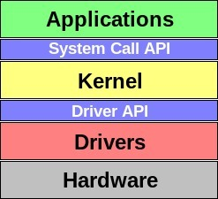

Uso de eventos
Una vez descrito cómo los drivers almacenan los paquetes de información es imperioso explicar que luego lo que hacen es generar eventos, que son líneas de código predefinidas en el Kernel del Sistema Operativo.

Los trackpads viejos sólo proveen información de posición relativa y crean eventos de mouse, tales como: REL_{X,Y} que reporta movimiento relativo, BTN_LEFT que reporta presión de botón izquierdo y BTN_{MIDDLE,RIGHT,4,5,etc.} que reporta presión
del botón derecho/central según corresponda.Los trackpads viejos sólo proveen información de posición relativa y crean eventos de mouse, tales como: REL_{X,Y} que reporta movimiento relativo, BTN_LEFT que reporta presión de botón izquierdo
y BTN_{MIDDLE,RIGHT,4,5,etc.} que reporta presión del botón derecho/central según corresponda.
Los siguientes trackpads debieron proveer de posición absoluta en el toque, creando el evento ABS_{X,Y} para la ubicación del toque.
BTN_TOUCH
reporta si el trackpad ha sido contactado y por ende está activo. Cuando hubiese soporte multitáctil, BTN_TOOL_ debiese reportar el número de toques activos en el trackpad.
Se define un conjunto de eventos ABS_MT con las propiedades deseadas.
Los eventos están divididos en categorías, para permitir la implimentacion parcial. El conjunto mínimo consiste de ABS_MT_POSITION_X y ABS_MT_POSITION_Y, lo que permite seguir más de un contacto. Si el dispositivo lo soporta, el ABS_MT_TOUCH_MAJOR
y ABS_MT_WIDTH_MAJOR podrían ser usados para identificar el tamaño del área del contacto y el seguimiento del dispositivo, respectivamente.
Los parámetros TOUCH y WIDTH tienen una interpretación geométrica,un ejemplo sería alguien mirando
a través de una ventana hacia alguien que tiene su dedo apoyado en esta. Verás dos regiones, una interior que es la parte del dedo que toca el vidrio, y la región exterior formada por el perímetro del dedo. El centro de la región que toca
la ventana es ABS_MT_POSITION_X/Y y el centro del dedo que se aproxima es ABS_MT_TOOL_X/Y. El diámetro del toque es ABS_MT_TOUCH_MAJOR y el diámetro del dedo es ABS_MT_WIDTH_MAJOR. Ahora en el ejemplo la persona toca con más fuerza el vidrio,
la región del toque va a ser más grande, y en general, la proporción de ABS_MT_TOUCH_MAJOR / ABS_MT_WIDTH_MAJOR, el cual es siempre menor que la unidad, está relacionado con la presión del toque. Para dispositivos basados en presión, ABS_MT_PRESSURE
podría ser usado para obtener la presión. Para los dispositivos capaces de tener “contacto flotante” pueden usar el ABS_MT_DISTANCE para indicar la separación entre el dispositivo y el contacto.
BTN_TOOL_FINGER, BTN_TOOL_DOUBLETAP,BTN_TOOL_TRIPLETAP,
BTN_TOOL_QUADTAP: Estos códigos detonan una, dos, tres, y cuatro interacciones de dedos en el pad. Por ejemplo, si el usuario usa dos dedos y los mueve por el pad en un esfuerzo por moverse por el contenido en pantalla, el BTN_TOOL_DOUBLETAP
deberia obtener el valor 1 por la duración del movimiento. Nota que todos los códigos BTN_TOOL_ y los códigos BTN_TOUCH son ortogonales a propósito. Los eventos del pad son generados por el toque de los dedos y estos eventos deberían ser uno
por cada grupo de codigo. La mayoría solo tiene uno de estos códigos BTN_TOOL teniendo un valor de 1 durante cualquier cuadro de sincronización.
Protocolo multitáctil y eventos:
Los detalles del contacto son enviados de manera secuencial como paquetes separados de eventos ABS_MT. Solo los eventos ABS_MT son reconocidos como parte de un paquete de contacto. Ya que estos eventos son ignorados por las aplicaciones de “single-touch”
(ST), el protocolo MT pueden ser implementado en sistemas ST ya existentes.
Los drivers de dispositivos de tipo A separan los paquetes de contacto llamando a input_sync() al final de cada paquete. Esto genera un evento SYN_MT_REPORT,
el cual le da instrucciones al receptor para aceptar la información del contacto actual y prepararse para recibir el próximo.
Los drivers de dispositivos de tipo B separan los paquetes de contacto llamando ainput_mt_slot(), con una posición
como argumento al principio de cada paquete. Esto genera un evento ABS_MT_SLOT, el cual da instrucciones al receptor para prepararse para actualizaciones sobre la posición dada.
Todos los drivers marcan el final de la transferencia “multi-touch”
llamando usualmente a la función input_sync(). Esto instruye al receptor para actuar sobre los eventos acumulados desde el último EV_SYN/SYN_REPORT y se prepara para recibir un nuevo conjunto de eventos/paquetes.
La principal diferencia
entre los dispositivos A y B reside en el uso de contactos identificables para reducir la cantidad de información enviada al espacio de usuario. El protocolo de posición requiere el uso de ABS_MT_TRACKING_ID, ya sea provisto por el hardware
o calculado desde los datos crudos.
Para los dispositivos tipo A, el kermel driver debería generar un conteo arbitrario del conjunto completo de contactos anónimos actuales en la superficie. El orden en el que los paquetes aparecen en
el flujo de los eventos no es importante. El filtrado de eventos y el rastreo del dedo es dejado al espacio de usuario.
Para los dispositivos tipo B, el driver kernel debería asociar una posición con cada contacto identificado, y usar
esa posición para propagar los cambios del contacto. La creación, reemplazo y destrucción de contactos se logra modificando el ABS_MT_TRACKING_ID de la posición asociada. Un id de seguimiento no-negativo es interpretado como contacto, y el
valor de -1 detona un espacio vacío. Un id de seguimiento que no se presentó previamente se lo considera nuevo, y un id de seguimiento que ya no está presente se lo considera eliminado. Siendo que sólo los cambios son propagados, el estado
completo de cada contacto iniciado debe residir en el final de la recepción. Al recibir un evento MT, uno simplemente actualiza el atributo apropiado de la posición actual.
Algunos dispositivos identifican y/o siguen más contactos de
los que puede reportar al driver. El driver para dicho dispositivo debería asociar una posición tipo B con cada contacto que es reportado por el hardware. Siempre que la identidad del contacto asociada a una posición cambie, el driver debería
invalidar esa posición cambiando su ABS_MT_TRACKING_ID. Si las señales de hardware que están haciendo el seguimiento de más contactos de los que se están reportando, el driver debería usar el evento BTN_TOOL_*TAP para informar al espacio de
usuario del número total de contactos rastreados por el hardware en ese momento. El driver debería hacer esto enviando expresamente el correspondiente evento BTN_TOOL_*TAP y ajustar use_count a falso cuando se llama a input_mt_report_pointer_emulation().
El driver sólo debería aceptar tantos contactos como el hardware sea capaz de reportar. El espacio de usuario puede detectar que el driver puede reportar más contactos que espacios detectando que el mayor evento BTN_TOOL_*TAP soportado es
más largo que el total de espacios tipo B reportado en el absinfo para el eje ABS_MT_SLOT.
El valor mínimo del ABS_MT_SLOT es 0. vr